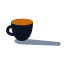
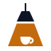

Long shadow
A cup at dusk throws a shadow far longer than itself. The shadow is the umbra in the name, and the low light is the hour the bar opens. The crema catches the lamp.

umbrista
Umbrista, owner checkpoint 3
Umbrista is a night coffee bar that opens at dusk in a city that does not exist. This board puts every brand option side by side so you can choose. Nothing here is final until you pick.
Reply with one choice per line. For example:
Logo B, Palette 1, Type 2, City 1, price format yes
You can mix freely: any logo works with any palette and type. Try combinations in the frame below.
A still of the first screen, built from the options on this board. Switch any option to see the combination. In the real site the scene behind the words is live 3D.
We open when the light goes.
A coffee bar in Calvessa, lit from dusk until three.
Lamps on tonight at 17:19, café time.
Umbrista is a design project, not a real café.
The opening time is computed live for the chosen city from its coordinates and time zone. Day shows the scene before the lamps come on.
Three ideas, not three colourways. Each is shown at 512, 64 and 16 pixels, on dark and on light. The 16 pixel version is a simplified drawing; the magnified view shows its actual pixels. Colours here use Palette 1 and will follow whichever palette you choose.
A cup at dusk throws a shadow far longer than itself. The shadow is the umbra in the name, and the low light is the hour the bar opens. The crema catches the lamp.

The signal that the bar is open: one pendant lamp switched on. In its pool of light, the cup appears as a dark shape, the shadow it casts upward into the light. Light and shadow in a single mark.

A monogram U that is also a cup. A horizon line crosses it, and the last of the daylight sits below the line, poured into the cup. The sun has gone down; the bar has the light now.
The wordmarks beside each mark are set in a candidate typeface for now. Once you choose a type option, the wordmark is drawn in it and converted to outlines.
The three marks at their real size, 16 pixels, among ordinary tabs. Dark and light browser themes. You can also put a mark on this page's own tab.
Both palettes are built from night inks with one warm lamp colour as the signal and crema in small amounts. Each has a night set and a day set, because the site follows the visitor's clock: before their dusk the scene is late afternoon, after it the lamps are lit. The bar under each set shows roughly how much of each colour a page uses.
Navy ink and the orange of a sodium street lamp. The cool blue-grey day is an overcast late afternoon, waiting for the lamps.
#0D1524background#15203Asurfaces#E4E8EFtext#97A3B8quiet text#F4A13Asignal: actions, open#D3B48Csparingly#DCE3ECbackground#EEF2F6surfaces#0D1524text#46536Aquiet text#965000signal by day#7E6040sparingly| Pair | Used for | Night | Day |
|---|---|---|---|
| Text on background | body | 14.86:1 AAA | 14.13:1 AAA |
| Quiet text on background | body | 7.17:1 AAA | 6.00:1 AA |
| Text on surface | body | 13.15:1 AAA | 16.23:1 AAA |
| Quiet text on surface | body | 6.35:1 AA | 6.90:1 AA |
| Signal on background | links, body | 8.70:1 AAA | 4.72:1 AA |
| Signal on surface | links, body | 7.70:1 AAA | 5.42:1 AA |
| Button label on signal | body | 8.70:1 AAA | 5.42:1 AA |
| Crema on background | large, detail | 9.29:1 AAA | 4.47:1 AA large |
Petrol, the blue-green of deep water at night, with the pale gold of a bare filament bulb. Softer and more glassy than Palette 1. The day is sea-glass grey-green.
#0A1C20background#12292Esurfaces#E1ECE9text#8DA9A5quiet text#FFD27Asignal: actions, open#E2C7A0sparingly#D6E3E0background#ECF2F0surfaces#0A1C20text#3E5957quiet text#7D5100signal by day#7A5E3Asparingly| Pair | Used for | Night | Day |
|---|---|---|---|
| Text on background | body | 14.48:1 AAA | 13.27:1 AAA |
| Quiet text on background | body | 6.96:1 AA | 5.75:1 AA |
| Text on surface | body | 12.57:1 AAA | 15.44:1 AAA |
| Quiet text on surface | body | 6.04:1 AA | 6.68:1 AA |
| Signal on background | links, body | 12.29:1 AAA | 5.22:1 AA |
| Signal on surface | links, body | 10.67:1 AAA | 6.08:1 AA |
| Button label on signal | body | 12.29:1 AAA | 6.08:1 AA |
| Crema on background | large, detail | 10.76:1 AAA | 4.56:1 AA |
Every pair passes. "AA large" means it passes for large text and interface parts only (Palette 1 day crema, 4.47:1); crema is never used for body text.
A display face with presence for the big moving words, and a text face built for reading. All four are open-licence (OFL) families available from Fontsource, so the site can host them itself.
Big Shoulders Display, a condensed face drawn from city signage, with Atkinson Hyperlegible Next, designed for low-vision readers. Night streets and painted shopfronts, and the most readable small text on the board.
Open after dark
dusk
Umbrista
We open when the light goes.
The first cup goes out as the street lamps come on. After that it is quiet work: beans roasted dark enough to stand up to the night, milk steamed slowly, and a table by the window kept for whoever needs it at two in the morning.
Opens 17:19 café time. Closes at 03:00. Rua das Lanternas 14.
Bodoni Moda, a high-contrast face like the title card of an old film, with Schibsted Grotesk, a sturdy news grotesque. More cinematic and more formal; the display is a serif, chosen for the film-title mood.
Open after dark
dusk
Umbrista
We open when the light goes.
The first cup goes out as the street lamps come on. After that it is quiet work: beans roasted dark enough to stand up to the night, milk steamed slowly, and a table by the window kept for whoever needs it at two in the morning.
Opens 17:19 café time. Closes at 03:00. Rua das Lanternas 14.
The kinetic samples loop for the board only. On the site they play once, tied to scroll.
Quiet, warm, a little poetic, never cute. Short sentences. Night-owl humour only in small places: the 404, empty states, the loading line.
We open when the light goes.
A coffee bar in Calvessa, lit from dusk until three.
Nothing down here but the dark.
Wrong turn after midnight. It happens. The lamps are back this way.
Back to the bar
Your table is held.
Saturday at 21:30 café time, for two. We'll keep a lamp on.
Umbrista is a design project, not a real café. No table is booked and nobody is expecting you. Your details are stored only as the privacy notice says.
The bar's hours belong to its city: it opens at that city's sunset and closes at 03:00 café time. Each city is invented, but sits on real coordinates in a real time zone, so its sunset can be computed every day of the year. Opening times below are computed for 2026.
A hill port on the Atlantic where the fog rolls in every evening and the trams run all night.
Europe/LisbonA rain-coast harbour where the night ferry crew needs coffee long after the town has gone to bed.
America/Los_AngelesA river city where dinner starts at ten, and the night watchmen once called the hours on every corner.
America/Argentina/Buenos_AiresPrices are in an invented currency, the crown. A real currency would place the café in a real country and make the prices look like a real offer. An invented one, named in words and with no symbol, reads naturally on a menu and cannot be mistaken for money anyone can spend.
Order total
19.10 crowns